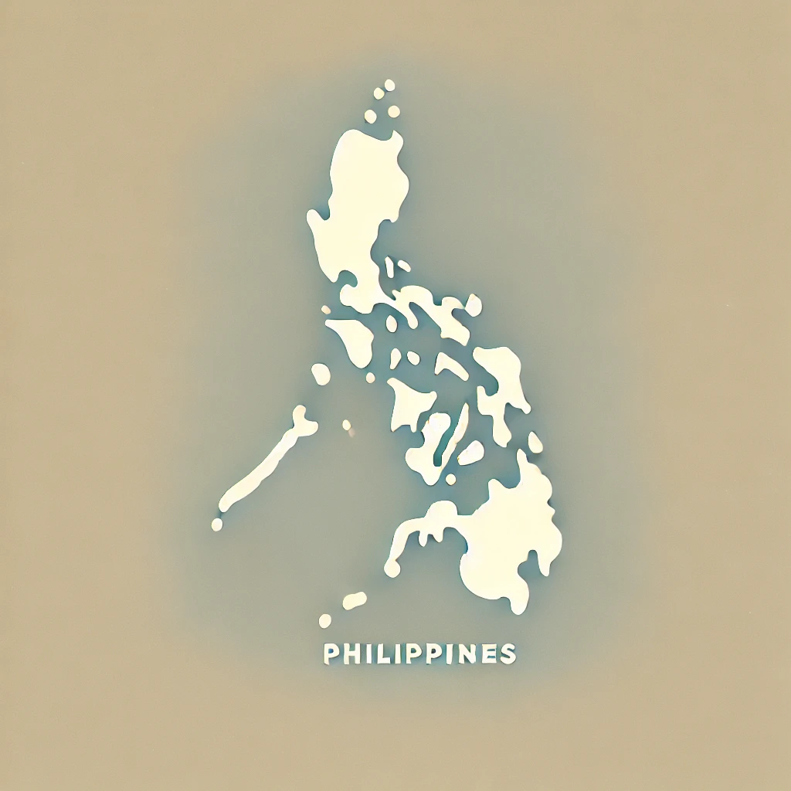

We’re about to embark on a quest to solve some major challenges for women in Philippines.
Pick one
problem below,
and I’ll guide you through the solutions!
Extreme weather events such as typhoons and floods have a greater impact on women due to their traditional roles as caregivers and food providers.
There's not much developed resources here for women! They have limited access to resources such as land, credit and technology, which makes it more difficult to adapt to the changing climate. Women in Southeast Asia, especially in rural areas, perform much of the agricultural labor but seldom own lands or tools.